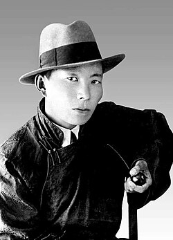
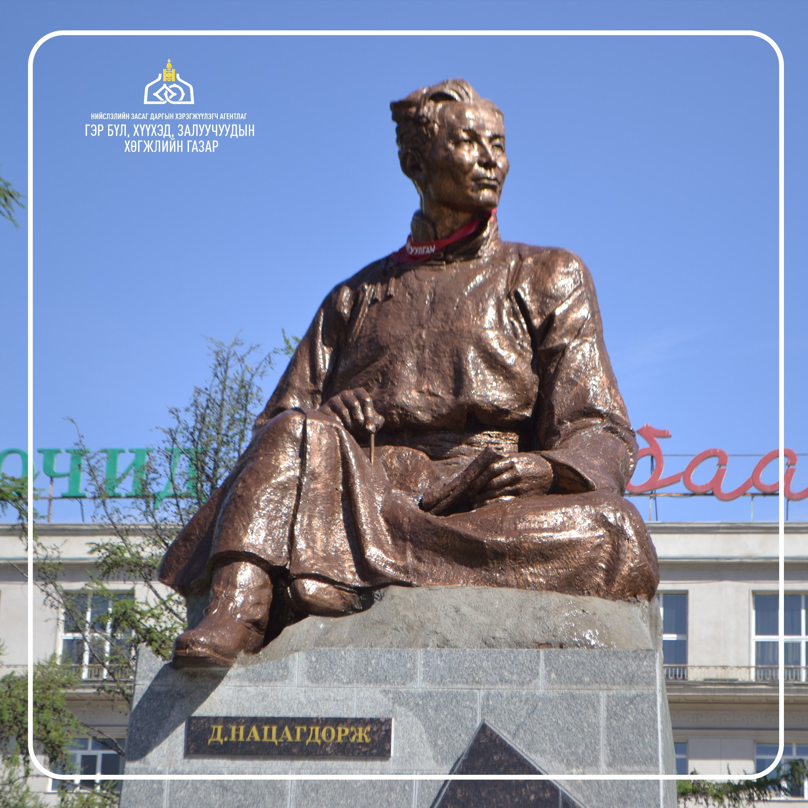
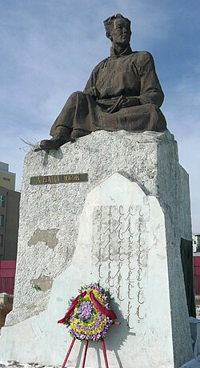

Д. Нацагдорж нь 1906 онд хуучин Түшээт хан аймгийн Дархан чин вангийн хошуу, өнөөгийн Төв аймгийн Баяндэлгэр сумын нутаг Гүн Галуутай гэдэг газар ядуу тайж Цэрэндоржийн Дашдоржийн гэрт төржээ. 1911 онд Д.Нацагдоржийн өвөг эцэг Цэрэндорж (дөтгөөр зэргийн тайж) нэг үе харьяат хошууны захирагч яваад нас барж эцэг Ц.Дашдорж Цэргийн яаманд бичээч болсон.
Их зохиолчийг 1913 онд долоон настай байхад эх Цоомойн Пагма нь бие барсан тул тэрээр эцэг Дашдоржийн эвээлд гэрээрээ өсөж 1914 онд нийслэл Хүрээ рүү шилжин нүүж суурьших болжээ. Д.Нацагдоржийн эцэг Цэрэндоржийн Дашдорж 1926-1927 онд БНМАУ-ын Цагдан сэргийлэх газрын даргаар томилогдон ажиллаж байсан баримт байдаг.
1915 онд Хүрээнд ирээд эцэг нь түүнийг 9 нас хүрмэгц Их хүрээний Алтангэрэл гэдэг хүнд шавь оруулан бичиг заалгажээ. Энэ үед Д.Нацагдорж монгол бичгээр тодорхой уншиж, сайн бичдэг болсон бөгөөд эртний сургаал бичиг болох «Зүрхэн тольт», «Элдэв тайлбар толь бичиг», «Хав муур хулгана гурвын үлгэр», «Хоёр загалын тууж», «Оюун түлхүүр» зэрэг монгол хэл, уран зохиолын түүхтэй холбогдох ном дэвтрүүдийг үзэн судалж ертөнцийг харах, амьдралыг танин мэдэж эхэлсэн байна.

1918 онд Дархан чин ван хошууны хүн ам, мал хөрөнгийн тооллогын дансанд эцэг Ц.Дашдоржийн ам бүл хүн амын дансанд- Ц.Дашдоржийг нас 34, хөвгүүн Нацагдорж нас 13, өрх нэг, ам хоёр, адуу, тэмээ үгүй, 4 үхэр, 21 хоньтой гэж бүртгэгдсэн байна.
1918 оны сүүлчээр Д.Нацагдорж Цэргийн яамнаа бичээчийн албан хаажээ.
1921 онд Ардын хувьсгал ялсны дараа нийгэм улс төрийн ажилд идэвхтэй оролцож, хувьсгалт шинэ соёл урлагийн ажилд чармайн зүтгэж байв. 1921 оноос тэрээр Цэргийн яаманд бичээч, жанжин Д.Сүхбаатарын гарын туслах түшмэл, Цэргийн зөвлөлийн нарийн бичгийн даргын алба хашиж байжээ. 1922 оны 4-р сард Монгол Ардын Намд гишүүнээр элсч, Намын Төв Хороонд туслах түшмэлээр батлагдаж зохион байгуулах хэлтэст ажиллаж байгаад уг хэлтсийн эрхлэгч болсон.
1922 оны 5-р сард Д.Нацагдорж, намын даалгавараар «Уриа» сонинд Цэргийн явдлын яамны тухай мэдээ сурвалжлага байнга өгч байх, «сурвалжлагч»-аар томилогдов. 1922 оны 8-р сараас Монгол Ардын Намын Төв Хорооны нарийн бичгийн даргын туслах. 1922 оны 10-р сараас цэргийн сурган боловсруулах хэлтсийн сурган гэгээрүүлэх тасгийн даргын ажлыг хавсарч байжээ.
1923 оны 3-р сард Монгол Ардын Намын Төв Хорооны Бүгд хурлаар Намын Төв Хорооны орлогч гишүүн, мөн оны 6-р сард Намын Төв Хорооны 11-р Бүгд хурлаар Намын Төв Хорооны нарийн бичгийн даргаар сонгогдсон байна. 1923 оны 7-р сард Монгол Ардын Намын 2-р Их хурлаар Намын Төв Хорооны гишүүн, тэргүүлэгч гишүүн бөгөөд Намын Төв Хорооны нарийн бичгийн даргаар сонгогдож байжээ. 1923 оны 9-р сараас 1924 оны 4-р сар хүртэл Д.Нацагдорж Дотоодыг хамгаалах газарт комиссар байсан.
1924 оны 2-р сарын 5-нд Монголын Ардыг гэгээрүүлэх яам байгуулагдаж «Ардын цэрэг» сонин анх буй болов. Улс орны батлан хамгаалах хүчийг бэхжүүлэх, цэрэг дайчдыг сурган хүмүүжүүлэхэд бэеэ даасан тогтмол хэвлэл чухал болохыг харгалзан үзэж, МАХН-ын Төв Хороо, Засгийн газрын хамтарсан хурлын шийдвэрээр Бүх цэргийн зөвлөлөөс эрхлэн «Ардын цэрэг» сонинг энэ өдрөөс эхлэн долоо хоногт нэг удаа хэвлэн гаргахаар тогтож сонины эрхлэгчээр тэр үед Бүх цэргийн зөвлөлд алба хааж байсан Н.Жамбаа, Д.Нацагдорж нарыг томилжээ.
1924 онд 18 настай Д.Нацагдорж Улсын Анхдугаар Их Хурлын зохион байгуулалтын ажилд оролцож мөн оноос Д.Нацагдорж МХЗЭ-ийн Төв Хорооны хоёрдугаар нарийн бичгийн даргын ажлыг хавсран гүйцэтгэж байсан ажээ.
1925 оноос Д. Нацагдорж «Ардын цэрэг» сонины эрхлэгчээр ажиллаж, Бүх Монголын Пионерийн байгууллагын Товчооны дарга хийж байсан.
|
website-ийг Хасбаатар, Адилмөрөн, Оюунбат зэрэг бүтээсэн болно © уран зохиолын бие даалтанд зориулж бүтээв 2025 он |